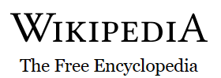

commons
freely usable photos &
more

Wikivoyoga
Free travel guide

wiktionary
Free dictionary
Wikibooks
Free Textbook

wikinews
Free news source
Wikidata
Free Knowledge base

wikiversity
Free courses materials
Wikiquotes
Free Quotes compendium

mediawiki
Free & open wiki
application
wikisource
Free library
wikispecies
Free species directory
Wikifunction
Free function library
Meta-wiki
communication coordination &
documentation